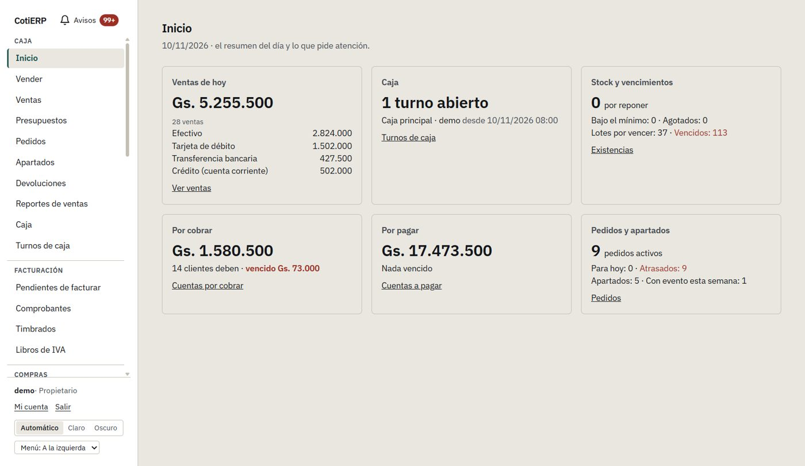
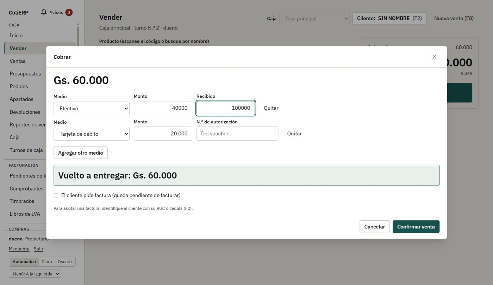
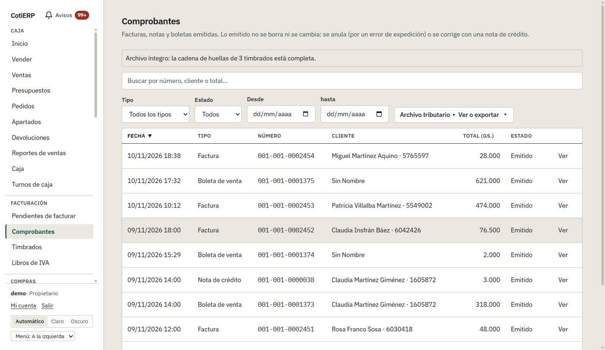
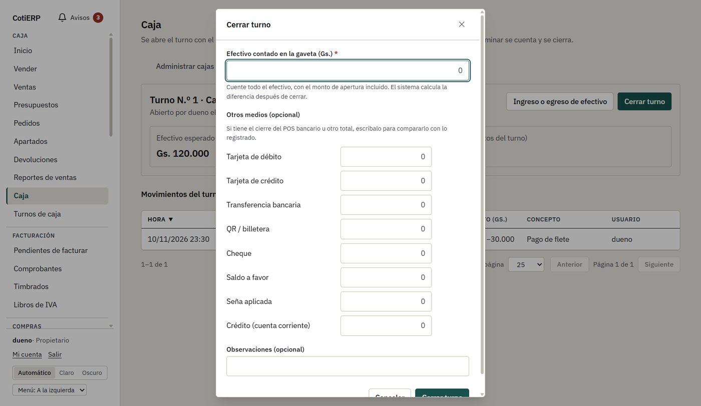
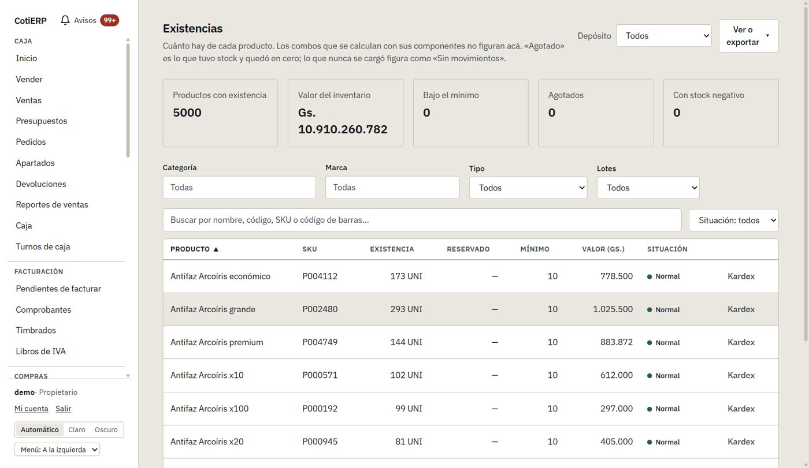
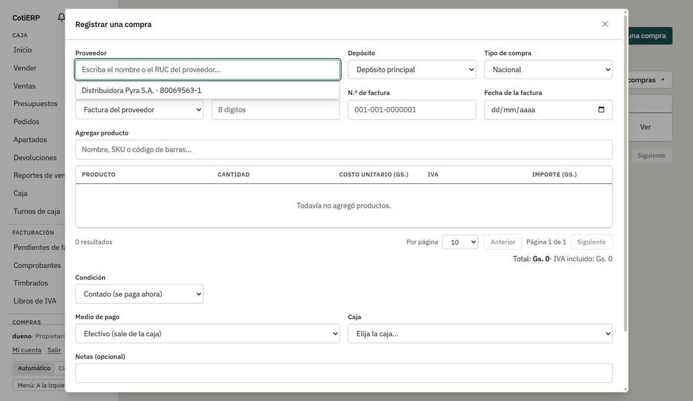
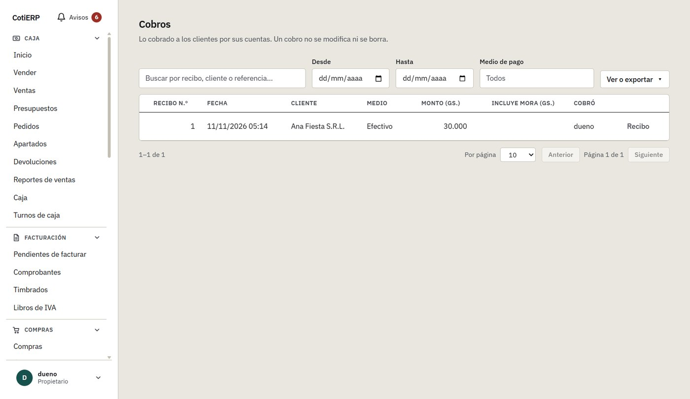
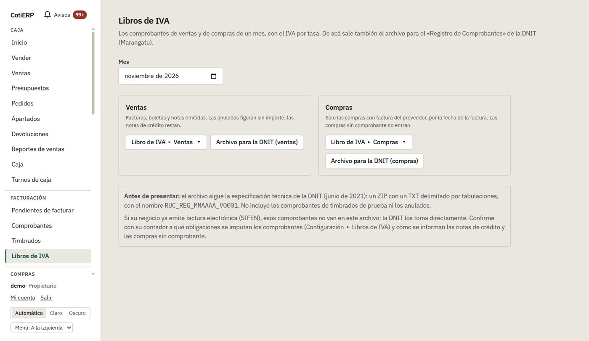

Vender y cobrar
Código de barras o búsqueda por nombre, vuelto automático, varios medios de pago y descuentos con tope y autorización del encargado.
Para cotillones y tiendas de fiesta
Venda, cobre, facture, controle la caja y el inventario, y deje listos los libros de IVA para su contador. Sin depender de internet y con sus datos en su equipo.
Descargar para Windows Ver el sistema
Versión de prueba con datos de demostración. Windows 10 u 11.

Código de barras o búsqueda por nombre, vuelto automático, varios medios de pago y descuentos con tope y autorización del encargado.
Factura, boleta, notas de crédito y de débito, con numeración sin saltos y una cadena de huellas que detecta cualquier alteración.
Turnos de caja: el cajero cuenta sin ver lo esperado y el encargado ve la diferencia por medio de pago.
Existencias por depósito, kardex, lotes y vencimientos, combos, transferencias y ajustes con motivo.
Compras nacionales o importadas, órdenes de compra recibidas en partes, costo promedio y cuentas a pagar.
Ventas a crédito en cuotas, cobros con recibo, pedidos con seña y apartados con fecha de evento.
Libro de ventas y de compras del mes, y el archivo para Marangatu, listos para exportar a Excel o CSV.
Usuarios con roles, auditoría, respaldos automáticos con copia a USB o nube, y derechos del cliente sobre sus datos.
Capturas del sistema con datos de demostración (tres años de ventas, 5.000 productos, 2.000 clientes).







CotiERP es un prototipo funcional que ya cubre el flujo completo de un cotillón. Lo que todavía falta, dicho con claridad:
Descargue el instalador, instálelo y abra el acceso directo CotiERP (demostración) para recorrerlo con datos de ejemplo.
La primera vez, Windows puede mostrar «editor desconocido»: elija Más información → Ejecutar de todos modos. Todas las versiones están en la lista de publicaciones.